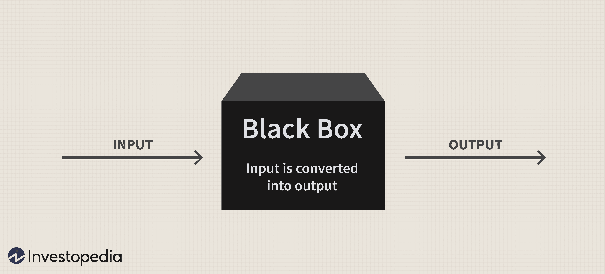
Le blackbox sono dispositivi o modelli utilizzati in vari campi, inclusi ingegneria, scienze computazionali e teoria dei sistemi, per descrivere e analizzare sistemi complessi di cui si conoscono solo gli ingressi e le uscite, senza necessità di comprenderne i dettagli interni.
Un sistema può essere:
La fase di modellazione è la fase in cui si crea un modello del sistema originale che ne copia fedelmente il comportamento. Possono essere di due tipi:
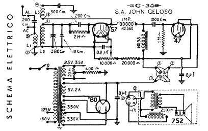
I sistemi reali sono generalmente complessi da studiare e sono spesso formati da elementi molto numerosi vhe possono avere tra di loro delle relazioni non facilmente intuitive.Per studiare un sistema è necessario un MODELLO che ne simuli il comportamento.
Attraverso i modelli possono essere effettuate simlazioni del sistema originale mediante:
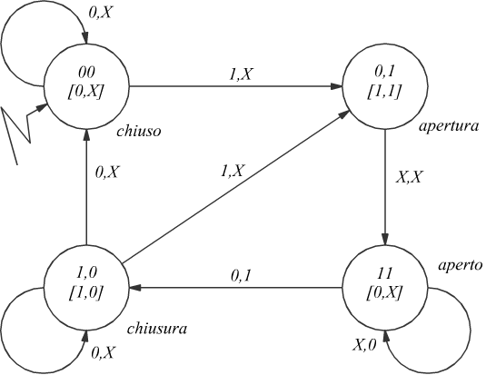
Un AUTOMA è un sottoinsieme dinamico di un sistema. Un automa a stati finiti(FSA,Finite State Automaton) è un sistema invariante,discreto negli avanzamenti e nelle interazioni, in cui gli insieme VI e VU,cosi' come gli stati, sono composti da numero finito di elementi.
In sintesi un automa a stati è formato da:
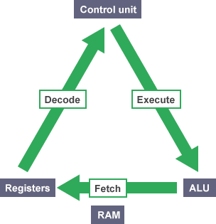
Il funzionamento di una CPU inizia con il prelevamento della memoria del codice macchina dell'istruzione da eseguire; tale operazione viene eseguita dalla Control Unit.L'istruzione prelevata viene trasferita in un registro specifico e quindi codificata. Dopo aver codificato, cioè tradotto, l'istruzione, la CPU emette i segnali necessari all'esecuzione dell'istruzione. Il procedimento appena descritto, attraverso il quale la CPU esegue un'istruzione, prende il nome di ciclo macchina,che può essere idealmente suddiviso in quantro fasi:
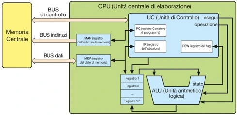
L'unità centrale di elaborazione (CPU) contiene gli elementi circuitali necessari al funzionamento dell'elaboratore.La CPU esegue i programmi residenti in memoria prelevando, decodificando ed eseguendo le istruzioni in essi contenute e coordinando il trasferimento dei dati tra le varie unità funzionali.
Nella CPU sono presenti:
Abbiamo parlato in generale dei registri nella sezione "I componenti della CPU" adesso andiamo a vederli più approfonditamente. I registri della CPU sono piccole unità di memoria molto veloci situate all'interno del processore. Essi sono utilizzati per memorizzare dati temporanei durante l'esecuzione delle istruzioni del programma. Di seguito, ti fornirò una panoramica approfondita dei registri più comuni e delle loro funzioni:
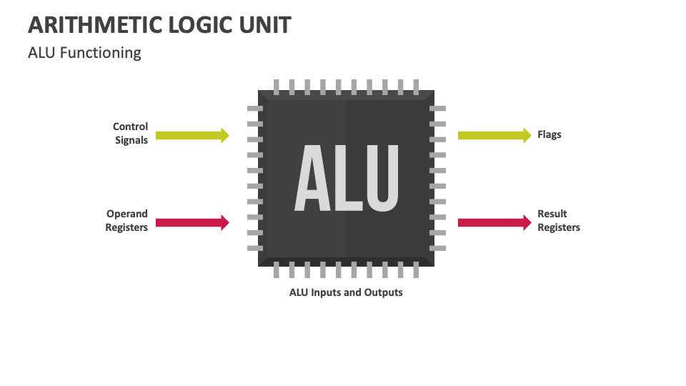
E' il blocco che esegue le trasformazioni sui dati.Poichè i dati,indipendentemente dal loro significato,sono codificsti attraverso numeri binari,qualsiasi trasformazione da fare sui dati si riduce a un operazione aritmetica logica.Interviene su due operandii che possono essere contenuti nei registri interni o provenire dalla memoria attraverso l'MDR e produce un risultato che può essere salvato su un registro interno o in memoria attraverso l'MDR.
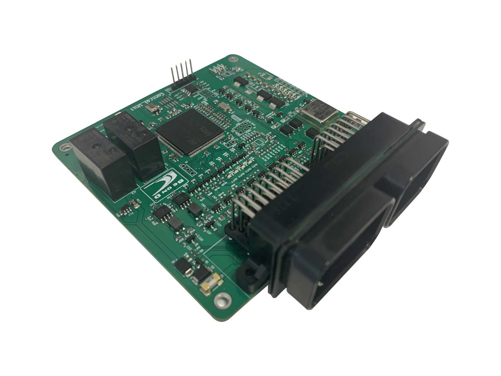
Cu(Control Unit) è il blocco che invia i comandi esecutivi all'ALU in base alla decodifica dell'istruzione e decide l'incremento dell'indirizzo di memoria contenuto nel registro PC, in modo da predisporsi all'esecuzione dell'istruzione.
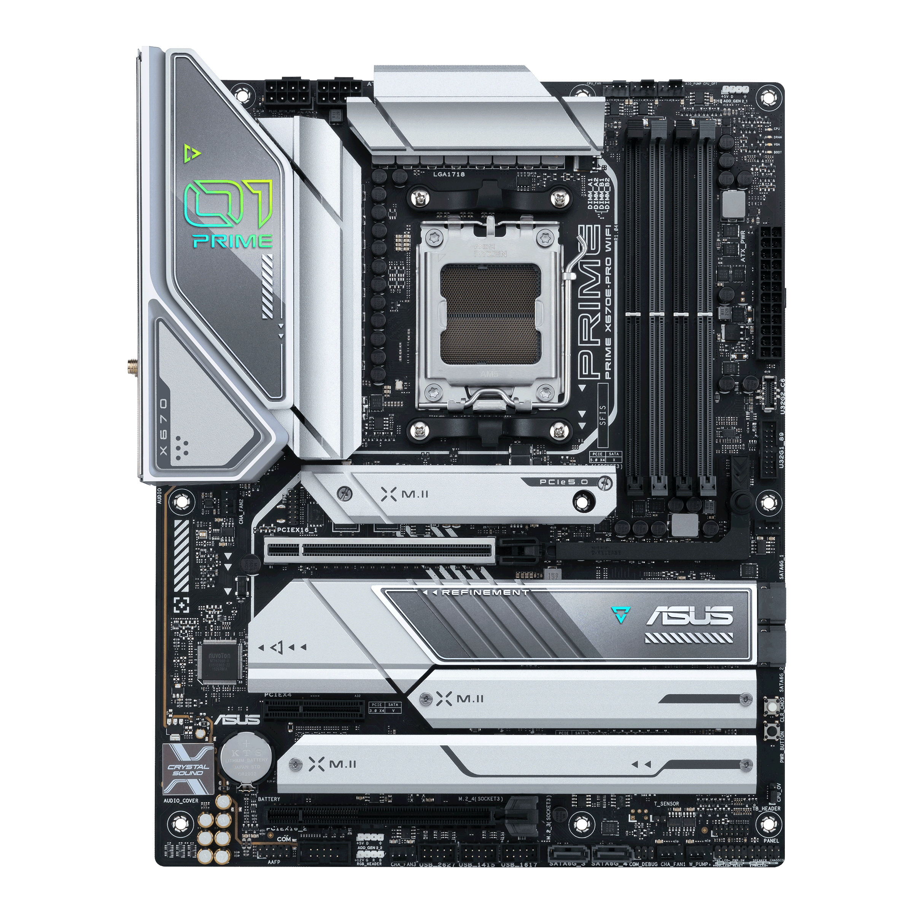
La scheda madre(motherboard) è la scheda a circuito stampato che ospita diversi componenti elettronici, che poossiamo così riassumere:
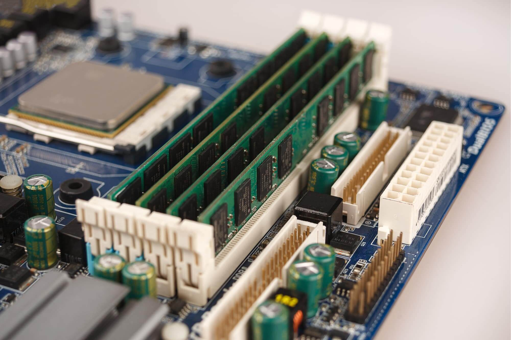
Un computer tipicamente contiene differenti tipi di memoria, essenzialmente appartenenti a tre diverse categorie RAM,ROM e cache (queste ultime verrano trattate ampiamente in seguito).
Nell'archittetura von Neumann il canale di comunicazionetra la CP e la memoria è il pnto critico del sistema ed è chiamato collo di bottiglia.La tecnlogia consente di realizzare processori sempre più veloci e memorie sempre più capienti, tuttavia la velocità di accesso alle memorie non è adeguata alla crescita repentina delle CPU. La soluzione ottimale per un sistema di gestione della memoria dovrebbe garantire costi minimi con capacità massime e bassi tempi di accesso al dato. La soluzione che è stata escogitata prevede l'uso di memorie con tempi di acesso diversi, organizzate secondo gerarchie: con l'uso di tecnlogie differnti possiamo soddisfare al meglio ciascuno dei requisiti.
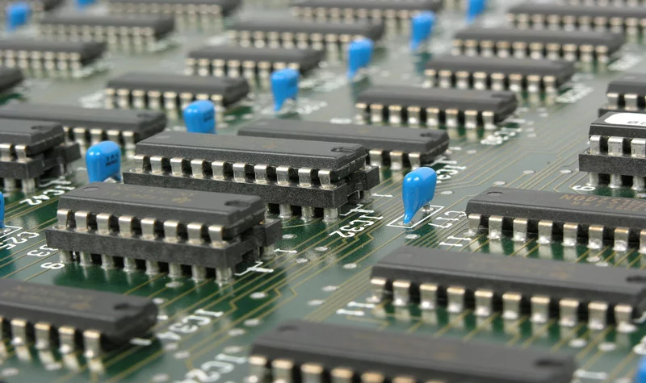
Il BUS può essere identificato da un insieme di linee che conducono elettricitò, ciascuna delle quali collegata a un Pin di un dispositivo.Per collegare due dispositivi che usano 32 piedini per comunicare, il BUS sarà formato da 32 linee costituite da altrettanti fili conduttori. In tal modo la linea 1 collegherà i piedini numero 1 dei dispositivi, la linea 2 collegherà i piedini numero 2 dei dispositivi ecc.Questo anche in ragione del fatto che ciascuna linea dei BUS pò trasmettere solo un segnale.
I BUS si possono dividere in due categorie:
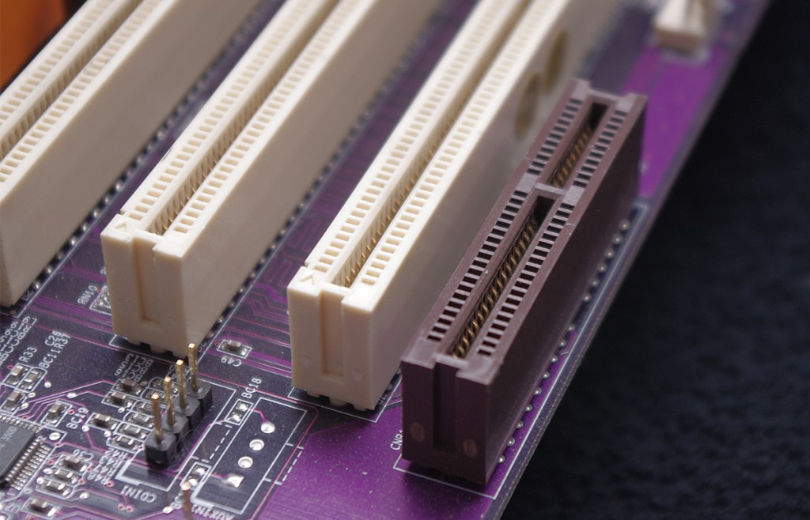
Venti o trent'anni fa i processori erano così lenti nell'elaborare le informazioni che i BUS, durante le operazioni di lettura e scrittra, erano sincronizzati al processore stesso ed era disponsibile un solo BUS di collegamento, chiamato BUS di sistema.Attualmente i processori sono così veloci che in molte architteture moderne esistono due o più BUS, ciascuno specializzato in particolari tipi di traffico.I due BUS principali sono:
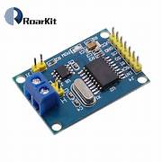
Nel sistema vi sono altri BUS connessi tramite opportuni CONTROLLER, che sono:
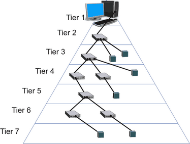
La topologia di rete dell'USB segue la forma di una piramide, in cima alla quale è posizionato il controller host, e ammette connesioni con gli hub che permettono di stratificare i collegamenti a stella. Al livello degli hub viene rilevata la conessione di nuove periferiche e viene controllata l'alimentazione della periferica stessa. La connessione a caldo delle periferiche, senza necessità di spegnere il sistema, è una delle caratteristiche peculiari dell'architettura USB: una volta conessa la periferica, viene effettuata la procedura di riconoscimento chiamata BUS USB enumeration schematizzata nel diagramma a lato. Lo standard USB garantisce la funzionalità tra i vari dispositivi collegabili, definendo delle classi di dispotivi che standardizzano anche il tipo di funzionamento. Per esempio gli hub costituiscono una classe di dispositivi, gli HID (Human Interface Device), che consentonol'inserimento manuale di dati naturali associato a ogni periferica utilizzando una tecninca basata sulle priorità.
Per migliorare le caratteristiche delle CPU e dei sistemi di elaborazione in generale esistono diverse tecniche.In primo luogo vi è l'aumento progressivo della frequenza di clock che a parità di comportamento rende più veloci le elaborazioni. Altre direzioni di evoluzione sono state l'aumento dell'ampiezza di parola e l'aumento dello spazio di indirizzamento , incrementando rispettivamente il numero di bit elaborati contemporaneamente e il numero di celle indirizzabili.
Entrambe le tecniche tuttavia, nell'evoluzione delle architteture, hanno raggiunto presto un punto nel quale non era più possibile ottenere presestazioni migliori. E' nata allora un'altra direzione di sviluppo, chiamata in generale con l'espressione di "archittetre non von Neumann"", nella quale sono state introdotte funzioni di elaborazione parallele che consentono di aumentare la velocità di elaborazione a parità di frequenza di clock.
GRADO DI PARALLELISMO DELLE ARCHITTETURE
Le architteture possono essere classificate, come indicato nella tassomia di Flynn, in base al grado di parallelismo chhe rendono possibile: